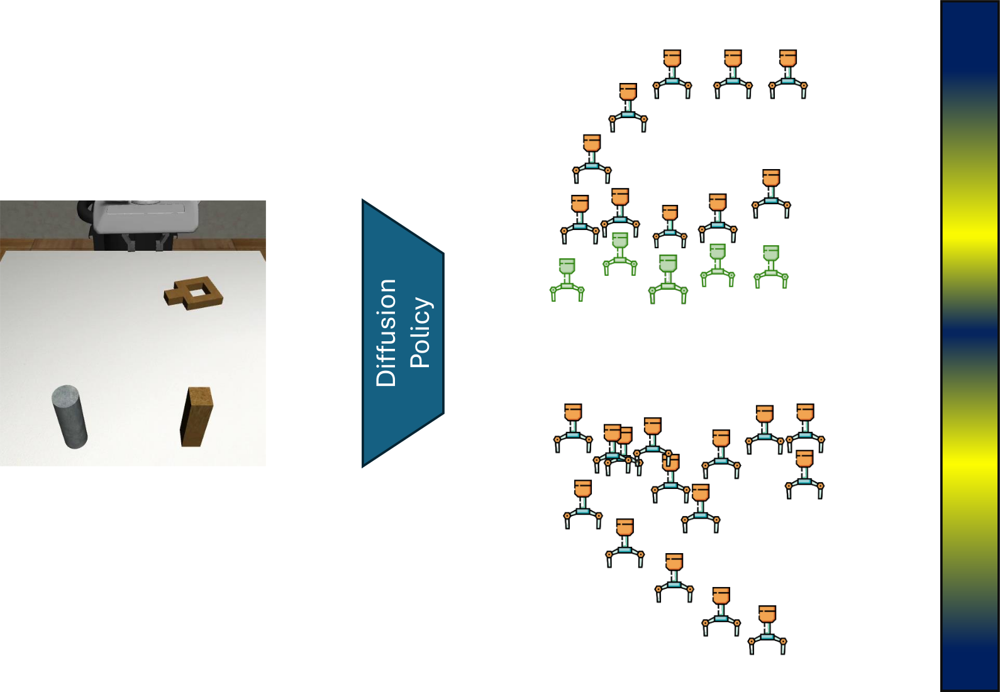
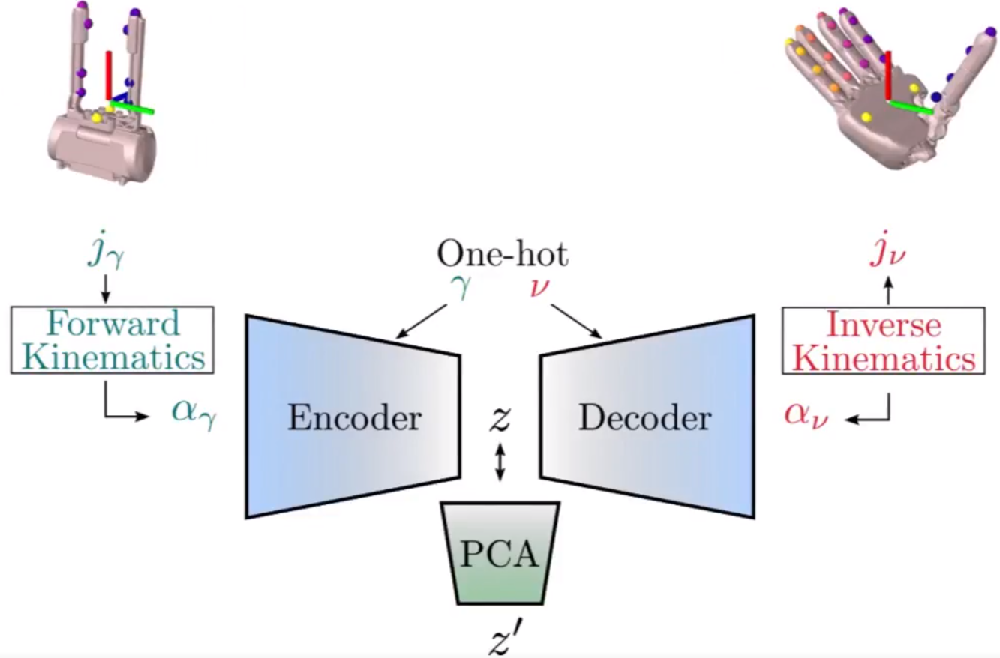
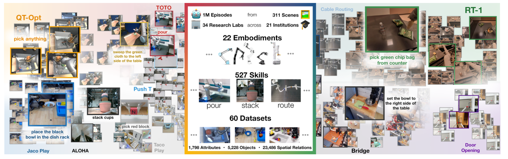
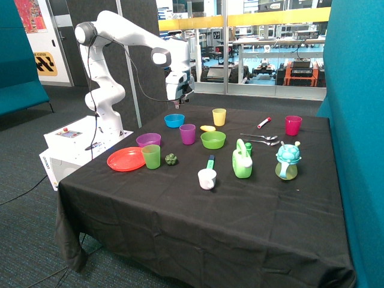
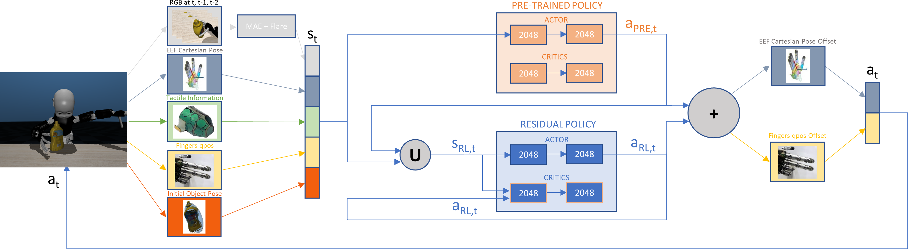
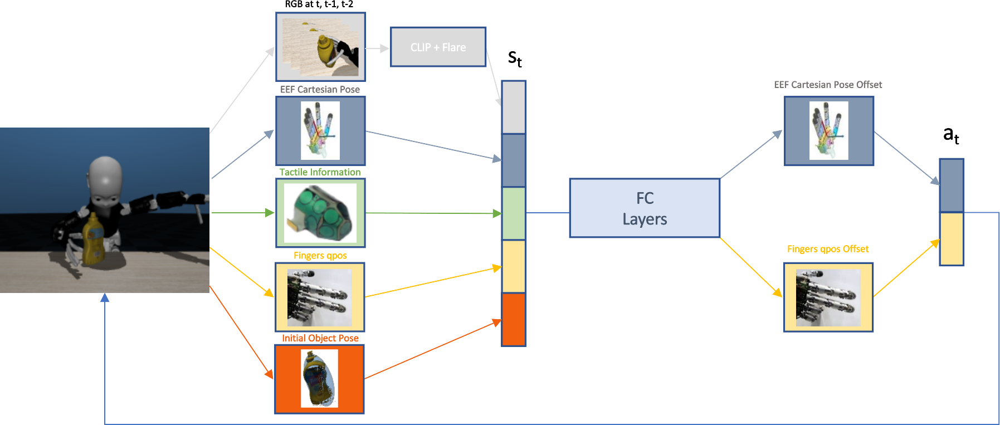
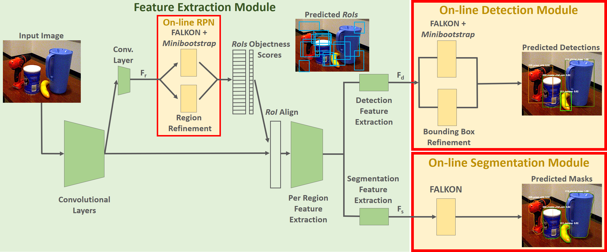
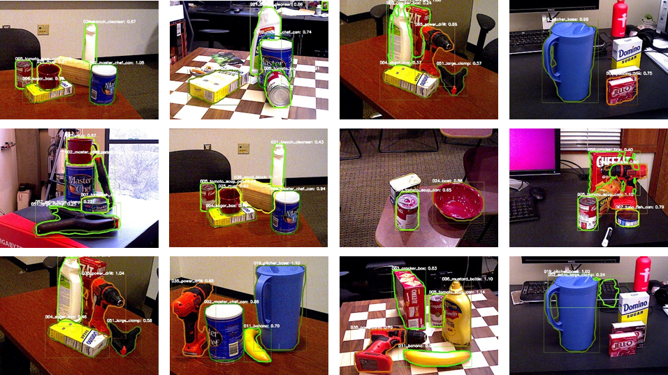
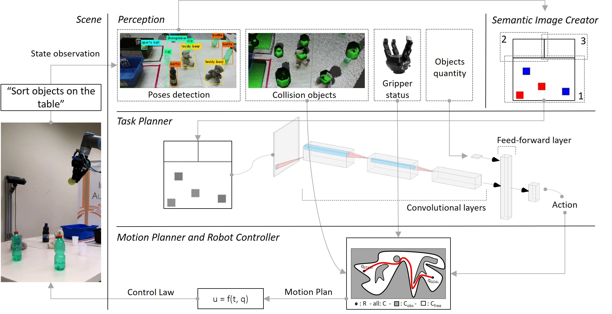

|
Federico Ceola I'm a PostDoctoral reseacher in the Humanoid Sensing and Perception group led by Lorenzo Natale at the Italian Institute of Technology. I work on Robot Learning to enable robots to perform task in everyday environments. My research lies at the intersection of Robotics, Computer Vision and Machine Learning. |

Research |
|
 |
KDPE: A Kernel Density Estimation Strategy for Diffusion Policy Trajectory Selection
Andrea Rosasco, Federico Ceola, Giulia Pasquale, Lorenzo Natale Conference on Robot Learning (CoRL), 2025 Project Page / Paper / arXiv A new method to select Diffusion Policy action trajectories via Kernel Density Estimation. |
|
 |
PCHands: PCA-based Hand Pose Synergy Representation on Manipulators with N-DoF
En Yen Puang, Federico Ceola, Giulia Pasquale, Lorenzo Natale IEEE-RAS International Conference on Humanoid Robots (Humanoids), 2025 Project Page / Paper / arXiv A novel approach for extracting hand postural synergies from a large set of manipulators using Anchor Description Format, CVAE and PCA. |

|
HannesImitation: Grasping with the Hannes Prosthetic Hand via Imitation Learning
Carlo Alessi, Federico Vasile, Federico Ceola, Giulia Pasquale, Nicolò Boccardo, Lorenzo Natale IEEE/RSJ International Conference on Intelligent Robots and Systems (IROS), 2025 Project Page / Paper / arXiv Grasping objects with the Hannes Prosthesis via Imitation Learning from eye-in-hand camera. |
|
 |
Open X-Embodiment: Robotic Learning Datasets and RT-X Models
Open X-Embodiment Collaboration IEEE International Conference on Robotics and Automation (ICRA), 2024 Best Conference Paper Award Project Page / Paper / arXivWorldwide collaboration to collect the largest dataset for robotics and train generalist robotic policies. |
|
 |
LHManip: A Dataset for Long-Horizon Language-Grounded Manipulation Tasks in Cluttered Tabletop Environments
Federico Ceola, Lorenzo Natale, Niko Sünderhauf, Krishan Rana Robotics: Science and Systems (RSS) Workshops on Data Generation for Robotics and Mechanisms for Mapping Human Input to Robots, 2024 arXiv / Dataset / Code A dataset collected via teleoperation composed of long-horizon robotic tasks. |
|
 |
RESPRECT: Speeding-up Multi-Fingered Grasping With Residual Reinforcement Learning
Federico Ceola, Lorenzo Rosasco, Lorenzo Natale IEEE Robotics and Automation Letters (RA-L), 2024 Paper / arXiv / Video / Code A novel Residual RL approach for multi-fingered grasping from vision and touch. |
|
 |
A Grasp Pose is All You Need: Learning Multi-fingered Grasping with Deep Reinforcement Learning from Vision and Touch
Federico Ceola, Elisa Maiettini, Lorenzo Rosasco, Lorenzo Natale IEEE/RSJ International Conference on Intelligent Robots and Systems (IROS), 2023 Paper / arXiv / Video / Code An RL from demonstration approach for multi-fingered grasping from vision and touch. |
|
 |
Learn Fast, Segment Well: Fast Object Segmentation Learning on the iCub Robot
Federico Ceola, Elisa Maiettini, Giulia Pasquale, Giacomo Meanti, Lorenzo Rosasco, Lorenzo Natale IEEE Transactions on Robotics (T-RO), 2022 Paper / arXiv / Video / Code On-line learning to segment new objects in new visual scenarios. |
|
 |
Fast Object Segmentation Learning with Kernel-based Methods for Robotics
Federico Ceola, Elisa Maiettini, Giulia Pasquale, Lorenzo Rosasco, Lorenzo Natale IEEE International Conference on Robotics and Automation (ICRA), 2021 Paper / arXiv / Video / Code On-line learning to segment new objects in new visual scenarios. |
|
 |
Robot Task Planning via Deep Reinforcement Learning: a Tabletop Object Sorting Application
Federico Ceola, Elisa Tosello, Luca Tagliapietra, Giorgio Nicola, Stefano Ghidoni IEEE International Conference on Systems, Man and Cybernetics (SMC) , 2019 Paper A new RL-based approach for object sorting with semantic images. |
Organized Workshops |
Invited Talks |
|
Template borrowed from here. |